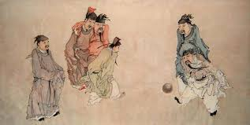

History of Football
. 
Found in the ancient Chinese, there was a game called Cuju,
which translates to Kick-Ball.
It was a type of game
where feet were involved and is a competitive,
game that involves
both teams trying to kick a ball through an opening
into a central hoop without the use of hands whilst ensuring
the ball does not touch the ground. football, the two teams were
restricted to interact with eachother.
Rules of Cuju
- Objective: Score points by kicking the ball through a small hole (the "elegant eye") in a net suspended between two high poles in the center of the field.
Continuous Play: The ball had to be kept off the ground; if the ball touched the ground or went out of bounds, possession changed or points were deducted.
- Permitted Body Parts: Players could use their feet, knees, shoulders, and chest to control and kick the ball.
Passing Sequence: According to some Song Dynasty rules, every team member had to touch the ball at least once before the captain could attempt a shot at the goal.
How has modern football changed over the years?
How has modern football changed over the years?
. 
Modern football has transformed from its ancient predecessor, the Chinese game of Cuju, evolving dramatically through many
key stages into the global phenomenon it is today. Cuju,
originally a military fitness exercise involving kicking a ball through a small goal,
differed greatly from the highly structured, professional sport of modern football